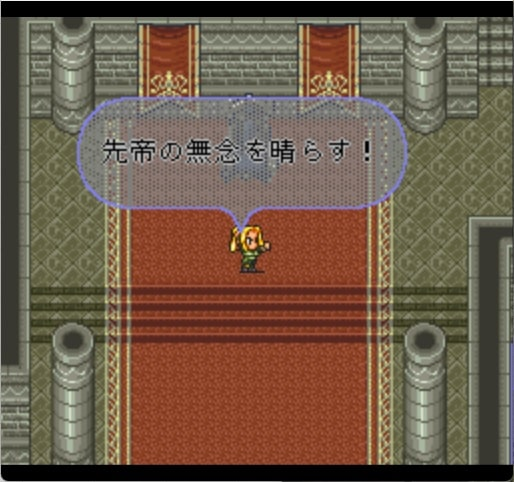
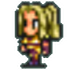
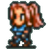
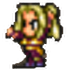
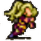

帝国猟兵（女）
初めに
海外版の水着テレーズが可愛かったので、帝国猟兵（女）についてまとめみようかなと思って書いたのがこのページです。基本的には、原作ロマサガ2(SFC版)の帝国猟兵（女）について書いています。
Jump into summer celebrations with a Global-Original Romancing Festival!
— Romancing SaGa Re;univerSe (@reuniverse_en) July 1, 2022
Grab new GLORG Styles SS [Hey! No Looking!] Katarina, SS [Buried in Sand] Emerald, and SS [You're My Prey Today] Therese!
Which #SaGaRS Summer Style are you adding to your roster? pic.twitter.com/hqn02TBPt3
仲間にしたい
帝国猟兵（女）はアバロンにいるクラスです。ゲーム開始直後のメンバーにテレーズがいるので必ず使用することになります。
皇帝にした時のセリフとか口調

テレーズ様、陛下
陣形
所持陣形は無し
能力値
帝国猟兵（女）は以下8名のキャラクタがいます。各キャラクタのステータス、初期技能、初期術法、閃きタイプは以下表の通りです。
| キャラ名 | 腕 | 器 | 魔 | 早 | 体 | LP | 理 | 術 | 魔+理 | WH | JH | 初期技能 | 初期術法 | 閃 |
|---|---|---|---|---|---|---|---|---|---|---|---|---|---|---|
テレーズ | 13 | 20 | 15 | 16 | 14 | 10 | 10 | 25 | 25 | +2 | -6 | 突 射 | 水 | 弓 |
メアリー | 15 | 21 | 14 | 15 | 13 | 8 | 13 | 16 | 27 | +2 | -7 | 射 | なし | 小剣 |
アグネス | 14 | 20 | 17 | 16 | 12 | 6 | 12 | 27 | 29 | +1 | -5 | 突 射 | 水 天 | 弓 |
キャサリン | 13 | 22 | 15 | 15 | 14 | 7 | 11 | 23 | 26 | +2 | -7 | 射 | なし | 弓 |
 アン | 16 | 20 | 14 | 15 | 13 | 9 | 12 | 18 | 26 | +1 | -4 | 射 | 地 | 弓 |
ユリアナ | 12 | 23 | 14 | 13 | 15 | 11 | 12 | 18 | 26 | +3 | -7 | 射 | なし | 弓 |
|  イザベラ | 14 | 21 | 19 | 14 | 12 | 7 | 10 | 37 | 29 | +1 | -1 | 突 射 | 地 | 弓 |
エリザベス | 13 | 22 | 15 | 13 | 15 | 8 | 12 | 21 | 27 | +2 | -7 | 射 | なし | 弓 |
| キャラ名 | 腕 | 器 | 魔 | 早 | 体 | LP | 理 | 術 | 魔+理 | WH | JH | 閃 | 初期術法 | 初期技能 |
※1 理：理力（隠しパラメータ）。冥術のペインのダメージに影響する。
※2 術：術威力（魔力 + max((魔力−理力), 0) × 2）。冥術以外の術、合成術のダメージに影響する。
※3 魔＋理：魔力＋理力。冥合成術の威力に影響する
※4 WH, JH：初期技能、初期術法に対するマスターレベルからの補正値
※5 技能：斬‥剣・大剣、突‥槍・小剣、殴‥斧・棍棒、射‥弓、体：体術
※6 閃：閃きタイプ。閃きタイプ毎の閃き可能な技の一覧はこちら
参考
能力値から見る帝国猟兵（女）
全体的に器用さが高いため、弓や小剣の使用が向いている。小手や全身鎧を装備すると弓の命中率が下がるので注意。
グリムリーパー（弓）の固有技である「皆死ね矢」の命中率は、弓ではなく突（槍・小剣）Lvに依存するため、突技能を持つテレーズ、アグネス、イザベラに使わせると良い。
メアリーのみ閃き適正が小剣で、他のキャラクターは弓。
ユリアナは全キャラ中8位の器用さなので初期から仲間にできるキャラとしてはおすすめ（右のリンクのステータス一覧の「器」のところ参照）。
イザベラは宮廷魔術士並みに術威力が高いです。宮廷魔術師（男）のサジタリウスやタウラス、軍師のコウキン、イーリスのウィンディと同じ値です。地術が得意なので、ストーンシャワーを使わせると中々いいダメージを出してくれる。また、突（槍・小剣）の技能も持っているため、青水晶の槍でサンダーボルトを使わせるのも良い。
※サンダーボルトのダメージ計算は他の技・術と比べてちょっと特殊な計算になっています。ざっくり言うと、『術威力』と『槍のレベル』に依存しています。詳細は以下リンク先参照青水晶の槍固有技のサンダーボルト。
名前の由来
帝国猟兵（女）キャラクター名の由来は「西洋の女帝（女王又は王妃）」です。キャラクタ毎の由来は各キャラの項目を参照してください。
ここから先は、キャラクタ毎にロマサガ2、エンペラーズサガ（エンサガ）、インペリアルサガ（インサガ）、インペリアルサガエクリプス（インサガEC）、ロマサガRSでの各キャラクタについて見ていきます。
テレーズ
ステータス
名前の由来
フランスのルイ１４世の王妃である「マリー・テレーズ・ドートリッシュ」が名前の由来らしいです。
マリーアントワネットの母で女帝である「マリア・テレジア（オーストリア）」のフランス語読みとも考えられる。
参考：
- wikipedia ロマンシング サ・ガ2
- wikipedia マリー・テレーズ・ドートリッシュ
- wikipedia マリア・テレジア
- ハプスブルク家が生み出した女帝の足跡を追う
- マリア＝テレジア
- ろまさが2人名辞典
エンサガ
エンサガでは弓キャラとして実装。


参考：
- エンサガDB：戦士一覧 テレーズで検索した結果
- インサガDB：家臣一覧 テレーズで検索した結果
インサガ
未プレイなのでよく知りませんが、エンサガのイラストで実装されている。
【強化キャラクター紹介】テレーズ
— インペリアル サガ 運営公式 (@Imperial_SaGa) November 15, 2017
バレンヌ帝国軍の「帝国猟兵」の一員で、機動力と弓の扱いに優れ、援護を担う帝国猟兵の鑑とも言うべき堅実な忠臣。未熟なジェラール皇子を守る陣形・インペリアルクロスの重要な一翼を任された。 #インサガ pic.twitter.com/ywp8U0ma6F
インサガEC
未プレイなのでよく知りませんが、エンサガのイラストで実装されている。
ロマサガRS
ロマサガRSでは、Aスタイルはリリース時から実装。SSスタイルは2021年4月に開催されたサガ魂ガチャ メカ編で実装されました。
【ガチャ開催予告】
— ロマンシング サガ リ・ユニバース公式 (@romasaga_rs) April 19, 2021
新ガチャ「サガ魂ガチャ メカ編」開催✨
サガ魂ガチャ限定スタイルのSS[最強装備を願いマス]メカが新登場 & Pick UP！
さらに、SS[獲物は追い詰めるわ]テレーズなどが新スタイルで登場 & Pick UP！
詳細はゲーム内お知らせをご確認ください。#ロマサガRS pic.twitter.com/w4Md3EURFY
【新スタイル紹介】
— ロマンシング サガ リ・ユニバース公式 (@romasaga_rs) April 19, 2021
テレーズ（『ロマンシング サガ２』より）
帝国猟兵の多くが本物の猟師の出身なの。
弓矢や剣の扱いだけでなく、足跡を追ったり、危険を察知したりする感覚も普段の生活から訓練されている。
私たちからは逃げられないわよ。#ロマサガRS pic.twitter.com/hsdgfWkxIl
Aスタイルのイラストはエンサガと同様のもの。SSスタイルのイラストは小林智美さんのイラスト。参考までにこちらが小林智美さん公式サイト。
ロマサガRSでテレーズが使える技は以下の通り。
| 使用可能技 |
|---|
| でたらめ矢 |
| サイドワインダー |
| 落鳳破 |
| 炎熱でたらめ矢 ※ロマサガRSオリジナル技 |
| バラージシュート |
| ハートシーカー |
クジンシー戦でバラージシュートを閃かせる動画を作ったので是非見てみてください。
ハートシーカーは『ウインクキラー』という、ロマサガ2トップクラスのレアアイテムの武器固有技ですね。ウインクキラーとハートシーカーについてはこちらにまとめてみたので是非見てみてください。
ロマサガRSのホーム画面でテレーズをタップした時のセリフ
メアリー
帝国猟兵（女）ではメアリーのみが話すセリフ。
ステータス
名前の由来
メアリ１世及び２世(イングランド女王)やメアリ・スチュアート(スコットランド女王)など、該当者多数。
参考
エンサガ、インサガ
エンサガでは弓キャラとして実装。

インサガはエンサガと同じ柄で実装。
参考：
- エンサガDB：戦士一覧 メアリーで検索した結果
- インサガDB：家臣一覧 メアリーで検索した結果
アグネス
ステータス
名前の由来
「アグネス・フォン・ポワトゥー」という、中世西ヨーロッパのローマ皇后。ハインリヒ3世の2番目の妃。
また、「アグネス・フォン・エスターライヒ」という、ハンガリー王妃もいる。ハンガリーのイシュトヴァーン3世の王妃。
参考：
エンサガ、インサガ
インサガでは小剣キャラとして実装。
参考：
- インサガDB：家臣一覧 アグネスで検索した結果
- エンサガ該当なし：戦士一覧 アグネスで検索した結果
キャサリン

ステータス
名前の由来
ヘンリー8世（イングランド王）の妻
- 最初の王妃：キャサリン・オブ・アラゴン
- 5番目の王妃：キャサリン・ハワード
- 6番目で最後の王妃：キャサリン・パー
参考：
エンサガ、インサガ
インサガでは小剣キャラとして実装。
参考：
- インサガDB：家臣一覧 キャサリンで検索した結果
- エンサガ該当なし：戦士一覧 キャサリンで検索した結果
アン


ステータス
名前の由来
イギリス女王のアンなど、該当者多数。
参考：
エンサガ、インサガ
インサガでは弓キャラとして実装。
参考：
- インサガDB：家臣一覧 アンで検索した結果
- エンサガ該当なし：戦士一覧 アンで検索した結果
ユリアナ
ステータス
名前の由来
オランダ女王のユリアナ。
参考：
インサガ
インサガでは小剣ャラとして実装。
参考：
- インサガDB：家臣一覧 ユリアナで検索した結果
- エンサガ該当なし：戦士一覧 ユリアナで検索した結果
イザベラ
 
ステータス
名前の由来
イザベル1世 (エルサレム女王)、イサベル1世 (カスティーリャ女王)、イサベル2世 (スペイン女王) などなど、多数該当。
参考：
エンサガ、インサガ
インサガでは弓キャラとして実装。
参考：
- インサガDB：家臣一覧 イザベラで検索した結果
- エンサガ該当なし：戦士一覧 イザベラで検索した結果
エリザベス
ステータス
名前の由来
エリザベス1世、エリザベス2世
参考：
エンサガ、インサガ
インサガでは小剣キャラとして実装。
参考：
- インサガDB：家臣一覧 エリザベスで検索した結果
- エンサガ該当なし：戦士一覧 エリザベスで検索した結果
参考